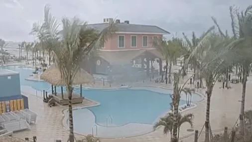
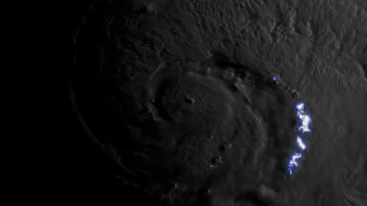

g1
ge
gshow
globoplay
o globo
Anatel começa a notificar operadoras no país para o desbloqueio do X
Tempo para rede voltar ao ar depende de cada empresa, afirma Anatel
Após desbloqueio de rede social, veja como recuperar a senha de acesso
PODCAST: Silas Malafaia X Bolsonaro e a guerra religiosa na direita

Flórida faz apelo final por casas vazias antes da chegada de furacão
"Cidade fantasma" à espera da tormenta

"Pior da vida", Milton pode ter ventos de mais de 250 km/h
Seleção da Argentina não consegue embarcar